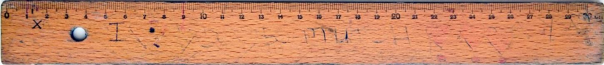

![]()
flowchart LR
A{{Is uncertainty subjective?}} -->| No | B[Accept uncertainty and plan for range of outcomes.]
A -->| Yes | C{{Can you learn new information about it?}}
C -->| No | E[Research methods to increase learning capabilities and accept uncertainty in the meantime.]
C -->| Yes | D[Research topic further and update uncertainty.]
Uncertainty, chance, and chaos – these are concepts we associate with difficult decisions, existential questions, and perhaps anxiousness. They are with us everyday and stay with us for our entire lives. Yet any serious engagement with these topics quickly leads us deep into a confusing world of philosophy and mathematics, which doesn’t just allow us to describe these concepts, but also offers us a tool for making decisions: game theory. The aim of this post is to discuss these topics in an accessible and practical way, to cover some mathematics without mathematics™, and philosophy without philosophy™ .
Probability – a measure for uncertainty
In history, people have started their journey of understanding something by trying to measure it, describing it mathematically, putting some numbers on it. This is where we’ll start, too.
| Physical Space | Uncertainty |
|---|---|
| – | – |
|  | Probability |
Imagine a box. We can measure its length along one dimension, we can measure its area if we use 2 dimensions, and measure its volume if we use all 3 dimensions of physical scpace. These measures can be generalised as the Lebesgue measure. The Lebesgue measure is the generalised way to measure subsets of Euclidean \(n\)-spaces. For \(n=1\), it is length, for \(n=2\), it is area, and for \(n=3\), it is volume. Even if you weren’t familiar with these terms, you were familiar with the basic concepts of measuring length, area, and volume. Just like the Lebesgue measure lets us measure Euclidean space, probability provides a measure for uncertainty. However, probability (\(P\)) is unitless and always in the range \(0.0 \leq P \leq 1.0\).
Ok, so we can measure uncertainty, but what is it and where it comes from?
Our observations of the world around us are always incomplete, filtered through our limited senses and cognitive biases, and often poorly understood and severely misinterpreted by us. This is a large source of uncertainty already. To complicate things further, there are things that are simply random and thus not predictable even if our observations were complete and we had the cognitive ability to process and understand them all. Let’s look at these types of uncertainty more closely and learn how to describe them.
Chaos or randomness?
The butterfly effect
Laplace’s demon
Epistemic uncertainty, and subjective probability
Perfect dice
Perfect dice, aleatory uncertainty, and objective probability
Random for all practical purposes
In many practical cases, we cannot tell if a process is unpredictable because it is truly random or unpredictable because we simply lack a lot of knowledge about it. If that understanding is far outside our current reach, we can treat the latter as “random for practical purposes”.
Options for preparation
pie title Pets adopted by volunteers
"Dogs" : 386
"Cats" : 85
"Rats" : 15
Note
All figures are public domain if not specified differently in the caption.